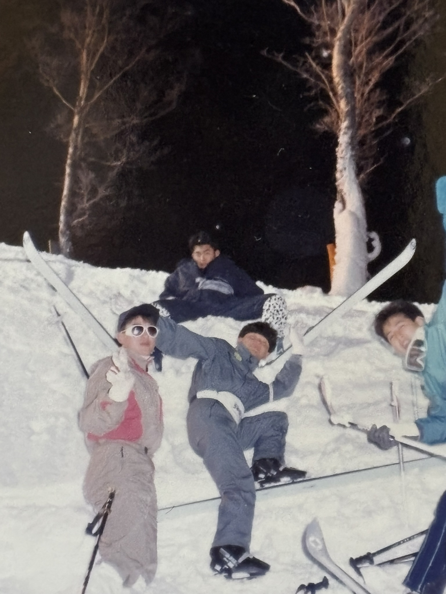
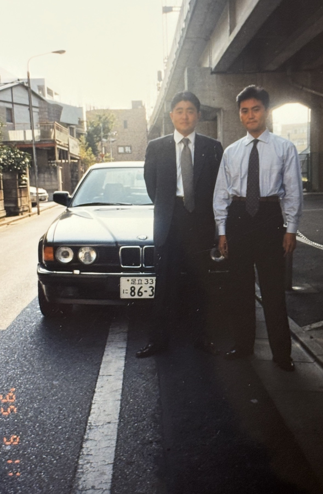
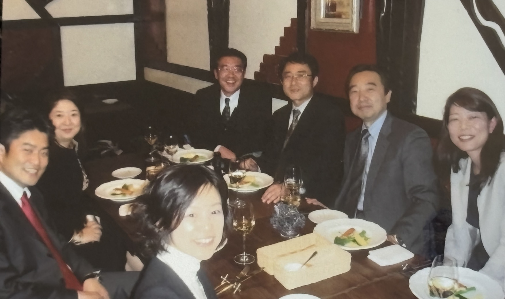
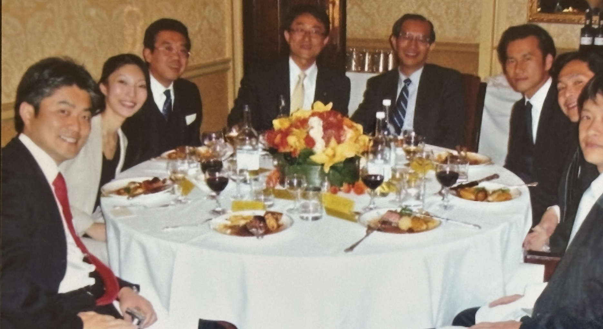
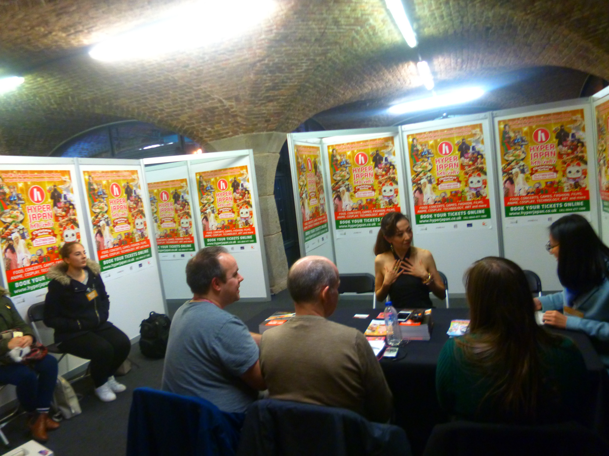
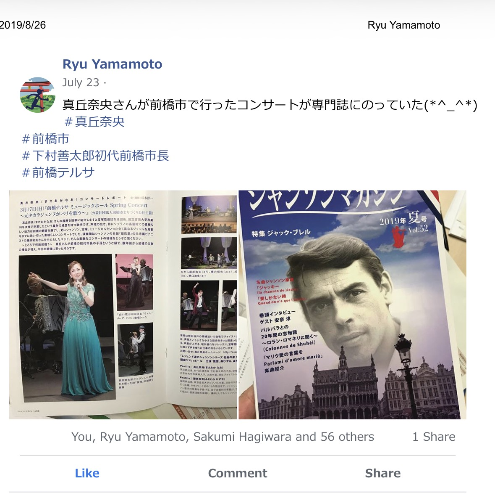
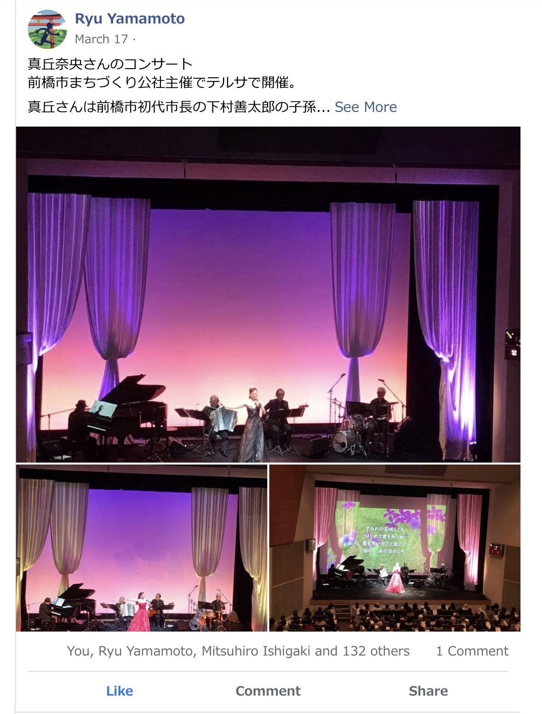
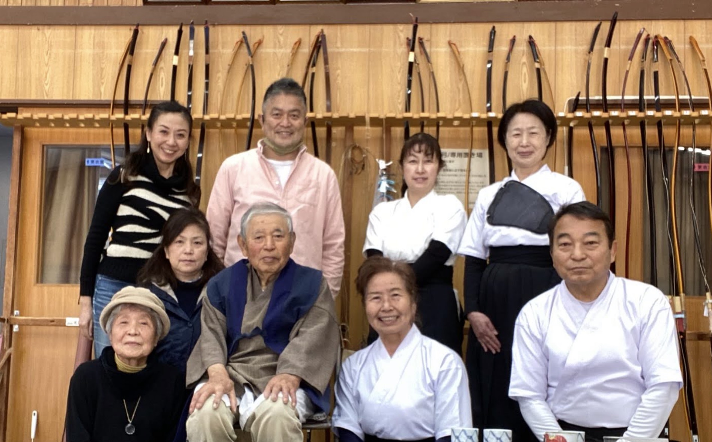
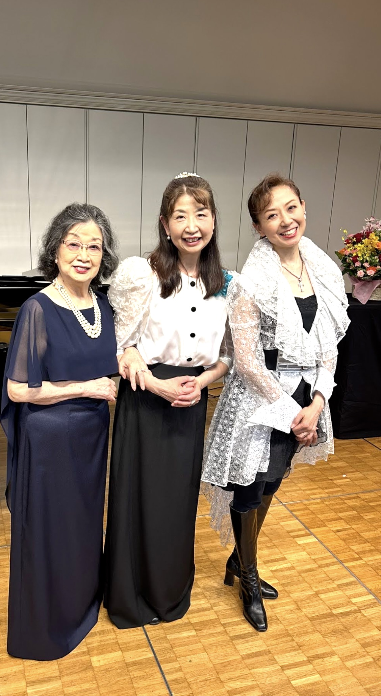

１９６６年代 ～原点～
１９６６年（丙午）８月１９日、群馬県伊勢崎市で父・孝夫と母・太恵の長男として生まれる。
父は６人兄弟の４男（５番目）。農業科学を専攻した国立大理系肌の公務員で、畑づくりや園芸、絵画に写真と、自然や表現好きな趣味人。また、道場通いを日課としていた五段の弓道家でもあり、豊かな感性と凛とした静観が同居する人物。母（旧姓・橋田）は７人兄弟長女（１番目）。高校時代は全日本庭球選手で、書道師範の顔も持つ。家業である縫製工場（元は伊勢崎銘仙の反物卸）を手伝っていた。
どちらの家系も地元に深く根を張り、辿れる限りでも平安時代の東国武士に繋がるようなので、血統書付きの大和朝廷下の騎馬隊グンマー族（笑）。
そんな文武両道の両親の元で、２歳上の姉と共に育った。姉は２３歳で豪州のターンブル家へ嫁ぎ、２人の娘に恵まれ、現在は夫とシドニーで生活を送っている。


核家族化が進んだ現代とは対照的に、両親共に兄弟が多く、地元をはじめ横浜や広島など、ことあるごとに親戚が集まる賑やかなファミリーだった。中でも歳が近かった母方の従兄弟たちとは、広島、東京、伊勢崎とお互いの街を往来して良く遊んだ。その名残で、今でも広島弁はそれなりに話せる（自称ｗ）。


こうした環境の中で、市内の西園保育園、南幼稚園で伸びやかな幼少期を過ごした。


1970年代 ～スポーツ少年から青春時代へ～
伊勢崎市立南小学校時代は、とにかく体を動かすことが好きだった。
野球、水泳、スキー、市内スキークラブ、サッカースポーツ少年団…。左ウイングとして副キャプテンも務めた。
市立第一中学校では当初サッカー部へ入部するつもりだった。しかし、小学校時代の憧れの先輩たちが"ビーバップ"スタイルへ変貌し、スパイクのかかとを踏みつぶしてプレーする姿を見て断念。
母の影響もあり軟式庭球部へ転向。中学3年の中体連では市内3位となり、県大会にも出場した。芸術面では、マンガに始まり絵を描くことが得意で、書道は教室に習いながら初段を取得した。


１９８０年代 ～高校‐大学、ＤＪ音楽、そして人生の視野が広がる～


高校は県内の男子校（前橋高校）へ進学。しかし自由奔放だった自分には秀才揃いの校風が少々窮屈で、気がつけば自分自身が"ビーバップ化"してしまう。勉強は二の次になったものの、応援部と軟式庭球部で青春を満喫。高校３年では群馬大学杯３位入賞を果たした。
大学への現役進学は叶わず、駿台予備校大宮校で１年間の浪人時代を過ごす。そこから週一でお茶の水本校に通った帰りに、渋谷の「Ｌａ Ｓｃａｌａ」でディスコＤＪパフォーマンスに魅了され、後に人生を通じて続くレコードのＤＪ編集と収集趣味が始まった。
早稲田大学社会科学部へ合格した際、自宅からの通学を促されたが、独立願望の強さから、一般教養課程の２年間は中野区の風呂なしアパートで１人暮らしを始めた。近くの銭湯へ通い、時には背中いっぱいの刺青を入れた常連客に水がかかって怒鳴られるなど、今では笑い話になる経験も少なくなかった。
大学後半の２年間は、世田谷区東玉川へ移り住んだ。ゼミ（元野村證券の教授による日本経済の実証研究）には一応真面目に出席していたものの、キャンパスライフはアルバイトとサークル活動が中心だった。典型的な「高田馬場に通う学生」の枠にはまらず、日常生活の軸足はすっかり東横線から渋谷＆日比谷線の沿線エリアへと移っていた。
長く働いたアークヒルズ全日空ホテルのバイト帰りには、首相官邸裏手（国会議事堂前駅）の「花の華ラーメン」に通い詰めた。あれから４０年近くが経つ今も、あの味への思い入れは色褪せない。（※当時の店舗は現在「支那麺 はしご 赤坂店」となったため、今は南麻布店へ月に１回ほど通っている。少し味のニュアンスは違う……）
また、この頃のバイト先にはＤＪの達人である先輩がいた。やがて先輩の家に入り浸るようになり、ＤＪテクニックを伝授してもらう傍ら、自身のレコード収集熱にも火がついた。


【NHK教育テレビ「YOU」に登場】





1990年代 ～金融の世界へ、そしてヨーロッパへ～
1990年4月、バブル景気の真っただ中、山一證券へ入社。
渋谷支店での5年間は個人営業の現場に身を置いた。当時470人いた総合職同期のうち、4分の3が全国の支店個人営業配属となったが、過酷な競争環境に加え、パワハラ・モラハラが横行する「使い捨て」の時代背景もあり、1年以内にその半数近くが退職していった。
入社1年目から日本のバブル崩壊が始り、世界も大きく揺れていた。イラクのクウェート侵攻に端を発する湾岸戦争。そして1991年8月19日、ゴルバチョフが軟禁されたソ連のクーデターである。この日の市場急落は「レッドマンデー」と称された。自分の誕生日がそのように呼ばれた微妙さはともかく、同年12月にはソ連が崩壊。日本のバブル崩壊と「失われた30年」は、こうした世界情勢の激変と歩みを同じくして始まっていった。


山一證券新入社員導入研修と渋谷支店時代 ～ 厳しさと同居していた同僚達との強い絆


担当新人クラスと研修インストラクターチーム
【留学生選抜】
1995年に大きな転機が訪れる。社内の留学生選抜(応募者1,000名に対して合格枠はわずか9名)を見事に突破した。
とりあえず人事部人材開発部へ配属となり、新入社員の研修クラスを受け持つ新人教育も担当した後に、いきなり海外赴任が決まった。行き先はオランダ・アムステルダム。
バブル崩壊後の証券界は不況の真っただ中。経費削減の波は容赦なく押し寄せ、留学生に選ばれた９名のうち、私を含む3名の支店の個人営業マンに甘い密月は許されなくなっていた。会社がくれたのは「仕事を離れて学べる夢のチケット」ではなく、「現地で叩き上げられる日本株営業」のポジション。かくして私の“海外留学”は、仕事をしながら通う現地の英会話スクール生へと見事にスライドしたのだった。


アムステルダム赴任日
【オランダ・アムステルダム勤務】

オランダ生活の拠点は、アムステルダムの職場があったワールドトレードセンターに車で３０分ほどの、アムステルフェーン地区に決めた。
いざ初めての海外勤務へ！……と意気込んだものの、日々の癒やしは「仕事終わりの英会話学校」の帰り道にあった。
ふらりと立ち寄ったアムステルダム市内中心の路地裏にある中古レコード店「Record Mania」で、学生時代からのDJ熱が大爆発してしまう。
英語の勉強もそこそこに、レコード店の常連へと登りつめたが、貴重な給料や海外手当の多くは、掘り出し物の中古盤へと次々に姿を変えていった。この時に掘り当てた80年代Soul・Funk・Discoの激レアコレクションは、今なお私の人生を彩る宝物となっている。


【ロンドンの金融街シティーへ】


次なる舞台はロンドン現地法人だった。引受部の日系法人担当として、日本企業の欧州市場における資金調達を後押しする。
さらに、日本株チームと連携して、上場企業と海外の機関投資家を結びつける「コーポレートアクセス（通称IR）」の支援にも深く携わっていった。
住まいは、ビートルズで有名なアビーロードの角を曲がった場所、セント・ジョーンズ・ウッド（通称センジョン）に構えた。独身で珍しくロンドン中心部の静かな北エリアに住んでいた理由はただ一つ。さらに北の地域（The North）に家族で住む多くの先輩方から頼まれる、週末ゴルフの運転手とプレーのお付き合いのためだった。


【山一證券自主廃業】
当時の橋本龍太郎内閣が掲げた「日本版金融ビッグバン」構想。その金融改革の大きなうねりの中で、ロンドン赴任から約2年が経とうとしていた1997年11月、私は日本の証券業界における歴史的な出来事に直面した。当時「四大証券」の一角を占めながら業界4位だった山一證券が、自主廃業を決断した。
直前の決算では営業上は黒字（帳簿上ではあったが）であり、大蔵省のモニターの下、資金繰りの目途も整っていた。それにもかかわらず、一転して内閣からの指示により自主廃業を余儀なくされた――そう聞かされたのは後のことである。
背景には、上場企業から預かった特定金銭信託をはじめとする損失資産を海外子会社へ帳簿上付け替える、いわゆる「飛ばし」という悪しき 業界の慣行があった。加えて、実質的な債務超過の状態に陥っていたこともあり、金融改革を進めるうえで避けて通れない問題としてメスが入れられたのである。
もっとも、どのような経緯であれ、山一證券が単独で存続することは、すでに極めて困難な状況だった。
ロンドンで自主廃業のニュースが流れた11月21日（金）の前々日、私はニューヨークからコンコルドでロンドンへ到着した海外担当常務を出迎える役目を任されていた。その際、ヒースロー空港からロンドン市内へ向かう車中で、提携を模索していた外資系証券会社との交渉が破談になったことを耳にした。また、最後の融資の頼みの綱とされていた富士銀行（同じ芙蓉グループ）からも、ロンドン駐在常務が週の半ばから終日、山一ロンドンの会長室にこもりきりとなっていた。
社内では、すでに異変が顕著に進行していた。コスト削減は極限まで推し進められ、自主廃業の1か月余り前には、計３５0名ほどいたロンドン現地従業員の約３分の１の解雇が断行された。さらに、日本食も食べられる貴重な社員食堂も廃止されるなど、現場には危機感が色濃く漂っていた。安田信託銀行が全ての海外業務から撤退、11月3日には三洋証券の会社更生法、などのニュースも続いていた。今思えば、社内にはすでに、ただならぬ空気が流れていたのである。
日本時間の11月22日（土）未明、山一證券自主廃業のニュースが世界中を駆け巡った。ロンドンでは、ちょうど21日（金）の夕方、仕事を終えて帰宅しようとしていた時間だった。翌土曜日には、日本の上場企業のIRロードショー御一行様をヒースロー空港へ出迎える予定も入っていた。
現地法人の会長や社長にとっても、この知らせはまさに寝耳に水だった。東京本社の役員を夜中に起こして事実確認を試みたものの、不機嫌そうな対応をされるばかりで、正式な確認には数時間を要していた。しかし、事実と判明すると、ロンドンオフィスでは直ちに全社員が招集され、現地採用の社員も含めて説明が行われた。
その席で、法務部責任者のマーク・フィニー氏は、「これから清算業務に入るので、会社の物には一切手を付けないように」と告げた。社内には貴重な絵画や年代物のワインセラーなどもあったため、それらのことかな、と想像しながら聞いていた。
まだ日本は22日未明で、一般にはニュースは広まっていなかったが、同期の友人には電話をかけて知らせた。
そして翌1998年2月、帰国命令が下り、山一證券本社の国際部付となった。
帰国にあたっては、全日空（ANA）が、海外駐在員とその家族全員の帰国便を手配してくれた。通常であれば会社は日本航空（JAL）を利用していたが、この状況では前払いを求められたようである。その中でANAは平時どおり後払いで対応してくださり、駐在員家族まで含めてきめ細やかにケアして頂き大変助けられた。
それにしても、創業101年の歴史は、あまりにもあっけなく幕を閉じた。
山一證券が長年主幹事を務めてきた企業には、松下電器産業（現・パナソニック）、キヤノン、新日本製鐵、東急電鉄、小田急電鉄、日立製作所、日本郵船など、日本を代表する企業が数多く名を連ねていた。
また、松下幸之助氏から譲渡を求められても手放さなかったという、伊勢神宮式年遷宮参拝の「一番札」の権利も受け継がれていたが、それは現在どうなっているのだろうか。
さらに、翌年以降に予定されていた大型新規上場案件、NTT移動体通信（NTTドコモ）や電通などの主幹事マンデートも、他社に競り勝って獲得していたにもかかわらず、結局果たせず仕舞いだった。
会社更生法による、いわゆる「倒産」とは異なり、自主廃業という形を選択したことで、金融当局による支援の元、経営陣が計画的に精算業務を進めてくれた。顧客資産は保護されて債権者へもほぼ完済、海外駐在員の帰国費用も自己負担せずに済んだ。また、会社都合退職として勤務8年分の退職金（20万円..）を受け取ることができた。会社への最後の小さな感謝だった。
写真下文章右スペース枠
そして、この転機が新たな出会いを生む。


【ソニーへ入社】
１９９８年春にソニーの財務部に新設された資本市場課へ入社。杉並区永福町に住まいを構えて、品川の本社へ通勤した。課はせいぜい４～５名の小所帯だったが、当時の上司は後のソニー会長・吉田健一郎氏、係長は現社長CEOの十時裕樹氏だった。
翌1999年春には、出井伸之会長の肝煎りの極秘プロジェクト「マネックス」準備室に、志願兵として参画。この新会社立案者で、個人でソニーと共同出資した松本大氏（当時ゴールドマンサックス本社ゼネラルパートナーで現マネックスグループ会長）と彼の部下３名と、神田錦町竹橋安田ビルの一室で日本のインターネット証券黎明期に立ち会うこととなる。

2000年代 ～再びロンドンへ～
旗揚げしたマネックスでは、事業開発部と顧客サービス部を牽引した。創業者・松本大氏の知名度とITブームの爆発的な追い風を背に急成長を続け、営業開始からたった1年後の2000年8月には東証マザーズ上場を成し遂げる。
振り返れば、企業の「廃業・上場廃止」と「起業・新規上場」。ビジネスの陰と陽、その表裏一体と言える両輪のドラマを、身をもって経験することとなった。
2003年にドイツ証券東京支店へ転職。その年の７月に再びロンドン勤務となった。
フランクフルトに本社を置く伝統ある商業銀行でありながら、英モルガン・グレンフェル買収を機に、ロンドンを拠点として世界資本市場で果敢にリスクを取る投資銀行部門が母体を支える軸となっていた。ここのグローバルマーケッツ部門で日本株営業部に身を置いた。
ここでは山一ロンドン時代に培ったノウハウが大いに役立った。日系証券の強みである「全方位外交」と「手厚い事業会社ケア」。そこに、必要な領域へ過剰なまでにフォーカスし、それ以外は潔く切り捨てる「外資系スタイル」を融合したハイブリッド型サービスを展開。日本を代表する上場企業の経営陣に帯同し、欧州や北米の有力機関投資家を巡るIRロードショー（コーポレートアクセス）を精力的にこなした。
ロンドンオフィスの現場において、日本人社員一人という時期も長く続いたが、世界の金融市場の中心舞台で役割を担った。



2010年代 ～仕事も人生も、大きな転機～
リーマンショックや東日本大震災、ギリシャショックなど、世界の金融不景気が続くなかの2013年、46歳で初婚を迎える。しかし直後、ドイツ銀行ロンドンの部門閉鎖により2度目の会社都合退職となった。
翌2014年にロンドンで長女真沙（Maasa）が誕生し、９月にはSMBC日興証券ロンドンでコーポレートアクセス部門責任者として再出発した。しかし、その翌年に離婚と退職を経験。人生最大の試練を迎える。
【ロンドン個人事業事務所設立】
同年、ロンドンにて個人事業主としてMylion Advisory Global Limitedを設立し、新たな挑戦を始めた。
２年ほどが経過し、徐々にグローバル法律事務所ホーガン・ロヴェルズや、地元有力金融メディアのフィナンシャル・タイムズ（FT）などから業務委託の仕事を請け負うようになった。
その後、FT社を買収した日本経済新聞社との縁にも恵まれ、同社のロンドン現地法人「日本経済新聞ヨーロッパ社」にて2019年まで業務に従事した。2018年には、FT社主催によるロンドン証券取引所でのESGセミナーの企画を立案。日系企業の役員やESGの専門家と主力投資家らを一堂に集めた200名規模のコンファレンスは、時代のテーマにも乗りメディアに取り上げて頂いた。


【真丘奈央とあらたな出会い】
そんなビジネスライフの傍ら、世間からは殆ど何をしているかも知れぬ身分だった2016年に、知人の企画した渋谷シダックスアカデミーホールにおけるディナーショーに呼ばれ、 ソロリサイタリストだった元宝塚歌劇団花組男役・真丘奈央（岡松葉子）と出会う。
真丘奈央の母方（下村家）のルーツが、自分が高校時代を過ごした前橋市にあり、彼女が初代前橋市長・下村善太郎の直系の玄孫であることを知った。そこで、当時の前橋市長・山本龍氏と彼女との対談企画を前橋市役所へ提案した。
この企画は、前橋市役所文化スポーツ観光部・歴史文化遺産活用担当の手島仁参事による手厚いご支援もあり、無事に実現することができた。
これを機に前橋市と真丘奈央とのご縁は深まり、数々の文化交流事業やソロリサイタルの機会が生まれた。リサイタルはいずれも300～400人近い観客で埋め尽くされ、県内はもとより県外からも多くの来場者が訪れた。宝塚歌劇団時代からのファンも数多く駆けつけ、会場は大きな盛り上がりを見せて地元メディアにも大きく取り上げられた。
高校時代を過ごし、お世話になった前橋市に、このような形で少しでも恩返しができ、地域創生の一助となる取り組みに関わることができた。
彼女との親交が深まる中で、ロンドンで毎年開催される日本文化イベント「ハイパーJAPAN」の主催者とのご縁にも恵まれた。そのご縁から、2016年と2018年の2度にわたり、イベント内ステージで真丘奈央のソロライブが実現した。公演はいずれも好評を博し、ロンドンの観客はもちろん、現地メディア関係者からも大きな喝采を浴びた。
そして2018年の大晦日、岡松葉子と入籍した。
運命とは実に不思議なもので、長年東京板橋で私を鑑定してくださっていた故・長妻未峰さん（R.I.P.）は、生前、「あなた方のご先祖は昔、ご近所同士だったのよ」と話していた。
当時は半信半疑だったが、「偶然は必然」という言葉を思い起こさせる出来事が、後年訪れる。父の書庫で偶然見つけた明治時代の『前橋市商業便覧』によって、長妻さんの言葉が史実として裏付けられたのである。
明治時代、富岡製糸場や前橋・桐生・伊勢崎などの生糸・織物産地で生産・集荷された生糸は、高崎・八王子方面を経由するルートなど、後に「日本のシルクロード」と呼ばれる輸送網を通って横浜港へ運ばれ、「Mayebashi」ブランドの高級生糸として欧州へ輸出されていた。
妻・葉子の母方の先祖は、その生糸貿易によって財を成し、多額の私財を投じて前橋の近代化と発展の礎を築いた人物であり、後に初代前橋市長となる下村善太郎である。一方、私の母方の先祖は、地元の製糸・紡績会社「交水社」の代表理事を務めていた角田久吉。
『前橋市商業便覧』に添えられた当時の住宅地図を開くと、下村・角田両家の屋敷は前橋市中心部の目抜き通りを挟み、斜め向かいに建っていたことが明確に記されていた。
百数十年の時を経て、その子孫である私たちが夫婦となった。そして、地域の発展に尽くした先祖同士にも浅からぬご縁があったことを知り、言葉では表せないほどの感動と驚きを覚えた。



2020年代 ～そして還暦へ・未来への躍進～
コロナ禍という世界的なパンデミックを経て、働き方や生き方のパラダイムシフトが起こる中、常に前向きな姿勢で新たなイノベーションを取り入れ続けた。
そして2026年、還暦（60歳）という人生の大きな節目を迎える。半世紀以上にわたる波瀾万丈の歩みを振り返りつつ、感謝の心を込めて本還暦イベントを開催。
「これまでの60年、そしてこれからの未来へ」——培ってきた知見と人脈、組織、探究心、探究心、そして永遠の熱意を胸に、吉沢孝太郎の新たな章が今ここから始まります。






